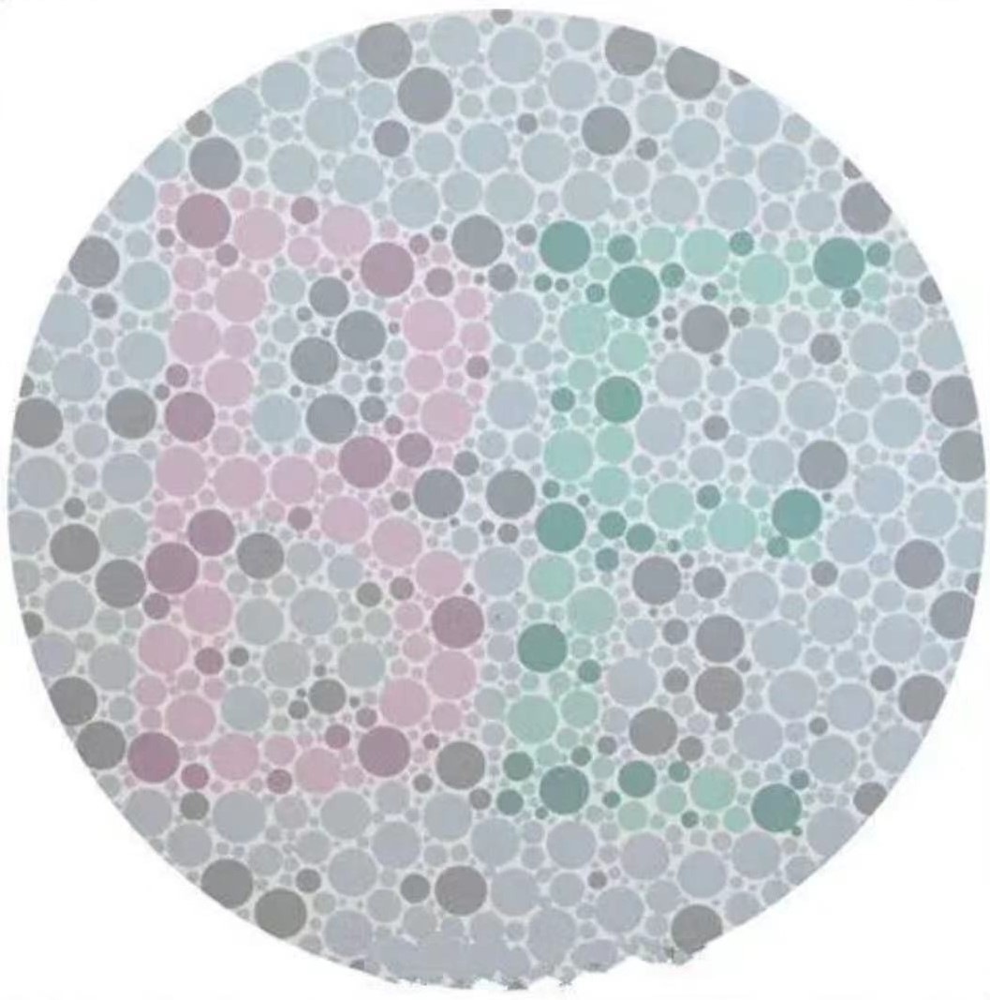

<!doctype html>
<html lang="zh-CN">

    <head>
        <meta charset="utf-8">
        <meta name="viewport" content="width=device-width, initial-scale=1">
        <title>RDK_COLOR</title>

        <script src='https://www.naodao.com/public/experiment/libs/jspsych-7/jspsych.js'></script>
        <script src="https://www.naodao.com/public/experiment/libs/plugin/plugin-html-keyboard-response.js"></script>
        <script src="https://www.naodao.com/public/experiment/libs/plugin/plugin-categorize-html.js"></script>
        <script src="https://unpkg.com/@jspsych/plugin-virtual-chinrest@2.0.3"></script>
        <script src="https://unpkg.com/@jspsych/plugin-html-button-response@1.2.0"></script>
        <script src="https://unpkg.com/@jspsych/plugin-survey-text@1.1.3"></script>
        <script src="jspsych-7.0//plugins//index_browser_rdkmin.js"></script>
        <script src="https://unpkg.com/@jspsych/plugin-preload@1.1.3"></script>
        <script src="https://unpkg.com/@jspsych/plugin-resize@1.0.3"></script>
        <script src="https://unpkg.com/@jspsych/plugin-fullscreen@1.2.1"></script>
        <script src="https://unpkg.com/@jspsych/plugin-survey@1.0.1"></script>
        <script src='https://www.naodao.com/public/experiment/libs/extension/naodao-2021-12.js'></script>
        <script src='https://www.naodao.com/public/experiment/libs/axios.min.js'></script>

        <link rel='stylesheet' href='https://www.naodao.com/public/experiment/libs/jspsych-7/css/jspsych.css'>
        <link rel="stylesheet" href="https://unpkg.com/@jspsych/plugin-survey@1.0.1/css/survey.css">
        <style>
          .jspsych-display-element {
             font-size: 22px;
             color: black;
          };
          .jspsych-content {
            max-width: 80%; 
          };     
        </style>
    </head>

    <body>

      <!-- Load template experiment -->
      <script src="template_Expt/move.js"></script>
      <script src="template_Expt/color.js"></script>

    </body>

    <script>
    
      //---------initialize--------

      var jsPsych = initJsPsych({
        on_finish: function() {
          data.localSave("csv", "RDK.csv");
        },
        default_iti: 1000,
        extensions: [
          {type: Naodao}
        ]
      });

      // the body of the experiment
      
      var main_timeline = [];

      var preload = {
        type: jsPsychPreload,
        images: [ "img//card.png", "img//color_blindness.jpg" ],
        auto_preload: true 
      };

      var fullScreen = {
        type: jsPsychFullscreen,
        fullscreen_mode: true,
        message: "<p>实验需要全屏模式，实验期间请勿退出全屏</P>",
        button_label: " <span class='add_' style='color:black; font-size: 20px'> 点击这里进入全屏</span>",
        data: {
          part: "fullScreen"  
        },
      };

      //---------Create instructions---------

      var beginning = { 
        type: jsPsychHtmlKeyboardResponse,
        stimulus:  `
            <div style="text-align: left; color: white">
              <h3 style="text-align: center; font-size: 30px; margin: 0;">欢迎参与本实验</h3>
                <p>为充分保障您的权利，请确保您已经知晓并同意《参与实验同意书》以及《数据公开知情同意书》，</p>
                <p>如果您未见过上述内容，请咨询实验员 ，</p>
                <p>如果您选择继续实验，则表示您已经清楚两份知情同意书的内容并同意 。</p>
                <p>在整个实验中，您需要完成两项任务，具体的任务要求会在后面说明 ，</p>
                <p>请按空格键进入实验</p >
            </div>`,
        on_start: function() {
          document.body.style.backgroundColor = "black";
          document.body.style.cursor = 'none';
        },
        response_ends_trial: true,
        choices: " ",
        data: {
          part: "instruction_beginning", 
        }
      };

      var end = {
        type: jsPsychHtmlKeyboardResponse,
        stimulus: `
        <div style="text-align: center; color: white; padding: 20px; font-size: 35px">
          <p>您已完成实验，按下空格或 5 秒后自动退出</p >
        </div>
        `,
        trial_duration: 5000,
        response_ends_trial: true,
        choices: " ",
        on_finish: function() {
          document.body.style.backgroundColor = "white";
          document.body.style.cursor = "default";
        },
        data: {
          part: "instruction_end"
        },
        extensions: [
          {type: Naodao}
        ]
      };
        
      //---------Create VirtualChinrest---------
        
      var card = {
        type: jsPsychVirtualChinrest,
        blindspot_reps: 3,
        resize_units: "cm",
        pixels_per_unit: 50,
        item_path: "img//card.png",
        adjustment_prompt: `
          <p> <span style="color: red">为了确保研究中的刺激以预期尺寸呈现，请您认真完成以下步骤。</span> </p>
          <p>这是一个标准的屏幕校对程序，不涉及任何数据的收集。</p> 
          <p>请您用一张与银行卡大小相匹配的物品，可以是银行卡或身份证，关键是物品的尺寸与标准银行卡尺寸相同。</p> 
          <p>请单击并拖动图像的右下红角，直到它与您的卡片精准匹配。</p>
          <p> 如果对以上操作感到困惑，请参考这个视频： <a href='https://www.naodao.com/public/stim_calibrate.mp4' target='_blank' style='font-size:24px'>参考视频</a></p>
          <p>完成后单击“确认”按钮。</p>
        `,
        adjustment_button_prompt: `
          <button type="button" style="font-size: 18px; width: 100px; height: 50px;">确认</button>
        `,
        blindspot_prompt: `
          <p>现在我们将快速测量您的观看距离。</p>
          <p>请将左手放在空格键上, 用右手遮住右眼, 左眼盯着黑色方块。 请一直保持这个姿势。</p>
          <p>按下空格键后，红球会向左运动。当移动到一定距离时它会消失。球消失后请<span style="font-weight: bold">立即再次</span>按下空格键。</p>
          <p>当您准备好后，请按空格键开始。</p>
        `,
        blindspot_measurements_prompt: "剩余次数",
        viewing_distance_report: `
          <p>根据您的回答，您的观看距离为<span id='distance-estimate' style='font-weight: bold;'></span></p>
          <p>这个距离是否正确？</p>
        `,
        redo_measurement_button_label: `
          <button type="button" style="font-size: 18px; width: 100px; height: 50px;">再试一次</button>
        `,
        blindspot_done_prompt: `
          <button type="button" style="font-size: 18px; width: 100px; height: 50px;">是的</button>
        `,
        data: {
          part: "jsPsychVirtualChinrest"
        }
      };
          
      var resized_stimulus = {
        type: jsPsychHtmlButtonResponse,
        stimulus: `
          <p>如果之前的测量正确, 在保持您现在的观看距离下, 下面的黑色正方形边长应为<span style='font-weight: bold;'>10 cm</span>。</p>
          <div style="background-color: black; width: 500px; height: 500px; margin: 20px auto;"></div>
        `,
        choices: [ `<button type="button" style="font-size: 18px; width: 100px; height: 50px;">继续</button>` ],
        data: {
          part: "jsPsychVirtualChinrest"
        }
      };
        
      //---------collecte perticipent's information---------

      const information = {
        type: jsPsychSurvey,
        survey_json: { showQuestionNumbers: true, title: "请填写基本信息", completeText: "提交", pageNextText: "继续", pagePrevText: "返回",
          pages: [
            {
              name: "page1",
              elements: [
                {
                  type: "text",
                  title: "请填入你的被试编号",
                  name: "subjectID",
                  isRequired: true,
                  inputType: "number",
                  min: 0,
                  max: 100000
                },
                {
                  type: "radiogroup",
                  title: "性别",
                  choices: ["男", "女"],
                  isRequired: true,
                  showNoneItem: false,
                  showOtherItem: false,
                  colCount: 0,
                  name: "sex"
                }
              ]
            },
            {
              name: "page2",
              elements: [
                {
                  type: 'text',
                  title: "年龄",
                  name: "age",
                  isRequired: true,
                  inputType: "number",
                  min: 0,
                  max: 100
                },
                {
                  type: "radiogroup",
                  title: "利手或惯用手",
                  choices: ["左", "右"],
                  isRequired: true,
                  showNoneItem: false,
                  showOtherItem: false,
                  colCount: 0,
                  name: "hands"
                },
                {
                  type: "radiogroup",
                  title: "是否为色盲或色弱",
                  choices: ["色盲", "色弱", "都不是", "不确定"],
                  isRequired: true,
                  showNoneItem: false,
                  showOtherItem: false,
                  colCount: 0,
                  name: "color_blindness"
                }
              ]
            }
          ]
        },
        data: {
          part: "survey"
        },
        on_finish: function(data) {
          window.subjectIdGlobal = data.response.subjectID;  //在这里获得被试id，把它存储为一个全局变量，用作之后的条件分配
        }
      };

      var color_test = {
        type: jsPsychSurveyText,
        preamble: `</img>`,
        questions: [
          {prompt: '请在方框内输入你从上图中看到的字母(可以不区分大小写），如果没有看见任何字母，请输入“none”', rows: 2}
        ],
        button_label: "提交",
        data: {
          part: "color_test"
        }
      };

      //分配不同的组别

      var group_move = {
        timeline: [move],
        conditional_function: function(){
          if (window.subjectIdGlobal <= 10) {
            console.log("move");
            return true;
          } else {
            return false;
          }
        }
      };

      var group_color = {
        timeline: [color],
        conditional_function: function(){
          if (window.subjectIdGlobal > 10) {
            console.log("color");
            return true;
          } else {
            return false;
          }
        }
      };

      var assign_group = {
        timeline: [group_move, group_color
        ],
      };

        
     
      //---------整个实验的时间线---------

      main_timeline = [ preload, fullScreen,  card, resized_stimulus, information, color_test, beginning, assign_group, end ]

      jsPsych.run(main_timeline);
        
    </script>
</html>